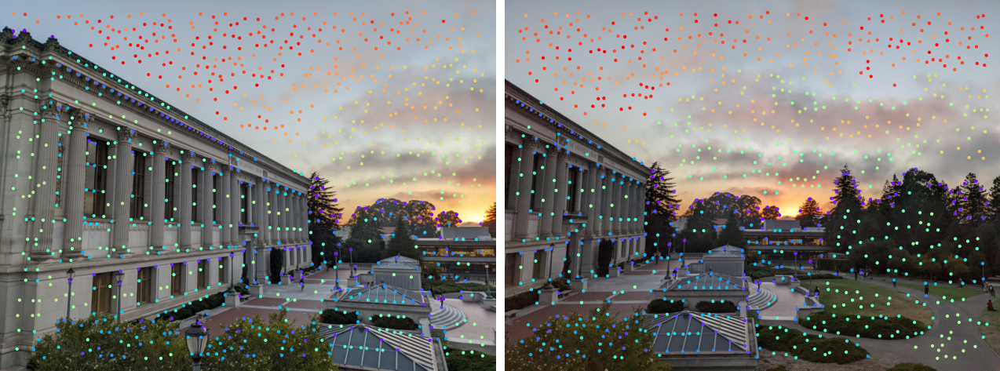
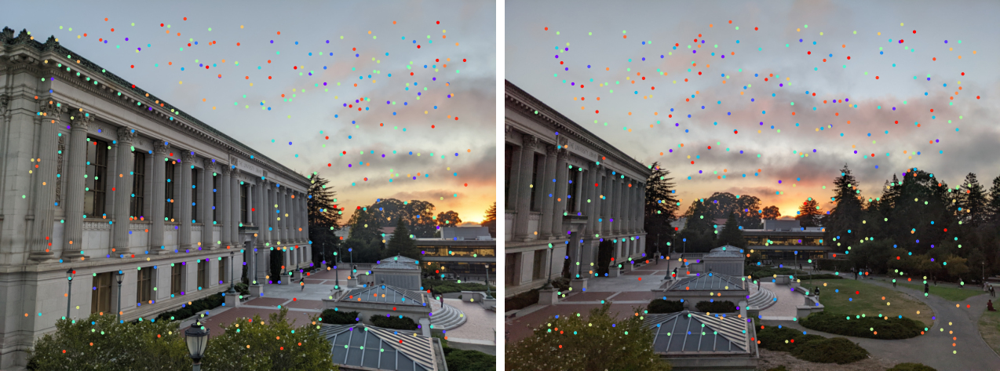
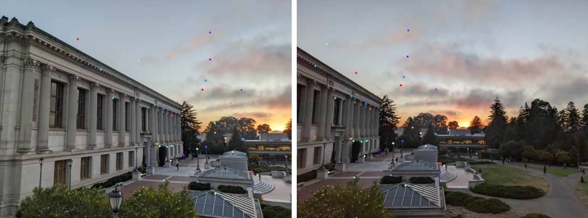
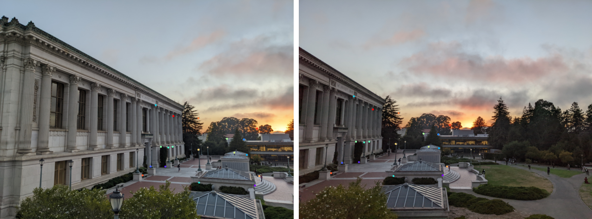

In this project we are interested in creating panorama images by stitching together multiple images of varying viewpoints. In this first part, similar to project 3 we manually define corresponding pairs of feature points present in two images, called $\vec p$ and $\vec p'$. Thankfully, unlike project 3 where we had to select 50+ points for each image, here we only need to choose a minimum of four points for each as to calculate the Homography Matrix, $H$. This matrix is a $3\times 3$ perspective transformation matrix that defines the mapping between the two images that we employ to generate the resulting mosaic.
Any two images of the same planar surface in space are related by this homography matrix, $\eqref{1}$. Notice that there are eight degrees of freedom (unknowns) as the bottom-right should always be normalized to 1 as this is a type of affine transformation and how we arrive at our minimum of four points per images. Manually selecting the points is prone to small human errors, so we can overdefine the system of equations (by selecting more than four points) and subsequently use least squares to solve our system of equations, $\eqref{5}$.
$$\overbrace{\begin{bmatrix} x_1 & y_1 & 1 & 0 & 0 & 0 & -x_1 x_1' & -y_1 x_1' \\ 0 & 0 & 0 & x_1 & y_1 & 1 & -x_1 y_1' & -y_1 y_1' \\ \vdots & \vdots & \vdots & \vdots & \vdots & \vdots & \vdots & \vdots \\ x_n & y_n & 1 & 0 & 0 & 0 & -x_n x_n' & -y_n x_n' \\ 0 & 0 & 0 & x_n & y_n & 1 & -x_n y_n' & -y_n y_n' \\ \end{bmatrix}}^{\large D \in \mathbb R^{2n \times 8}}\overbrace{\begin{bmatrix} a \\ b \\ c \\ d \\ e \\ f \\ g \\ \end{bmatrix}}^{\large \vec H \in \mathbb R^8} = \overbrace{\begin{bmatrix} x_1' \\ y_1' \\ \vdots \\ x_n' \\ y_n' \\ \end{bmatrix}}^{\large \vec p' \in \mathbb R^{2n}} \tag{5}\label{5} $$ $$\displaylines{\\ \large \vec H = \begin{cases} D\vec p' & n=4 &:&\text{exact solution} \\ (D^T D)^{-1} D^T \vec p' & n>4 &:& \text{least squares} \end{cases}}$$Now that we can compute the homography matrix of two pairs of points, we can rectify images. This is the process of changing the perspective such that some 'slanted' portion of the image appears head-on. This is done by selecting a set of points belonging to a trapezoid which we transform into a rectangle (defined by the trapezoid's dimensions) via a homography matrix. You can see in the left images the set of colored points $\vec p$ belonging to the trapezoid, and the right image the resulting rectified image.
After applying the homography transformation to both of the images as well as their feature points, we go about offsetting one image such that it's feature points align with the other image's feature points. Next, using the Gaussian stack method to blend images from project 2, we can create a mosaic by blending these two images.
Next up, in the second half of this project, we will go about selecting these feature points automatically rather than manually.
Feature detection is the process of finding candidate points that we expect to exist in both of the to-be-merged images. There are many different types of image features, but we will focus on corners: formally, points where the intensity of the image changes rapidly along more than one axis. The algorithm which we will use to find these points (corner vertices) will be the Harris corner detector. In a nutshell, this algorithm considers a window of pixels around many points in the image, and computes how much the intensity changes in each direction. If the intensity changes a lot in all directions, then the point is likely a corner (whereas had it only changed in one direction, it would be an edge parallel to said direction). We like corners since, compared to edges or other features, they are easy to identify and are invariant to slight deviations of perspective.
To describe this mathematically, we let $W$ be the (typically $3 \times 3$) window of pixels around the input point $(u,v)$ and $I(x,y)$ is the intensity of the image: $$\begin{align} E(u,v) &= \sum_{(x,y)\in W} \overbrace{\big(I(x+u,y+v)}^{\mathclap{\Large\qquad\qquad\qquad\approx\ I(x,y) + I_x u + I_y v\ =\ \begin{bmatrix} I_x & I_y \end{bmatrix} \begin{bmatrix} u \\ v \end{bmatrix}}} + I(x,y) \big)^2 \\ &\approx \sum_{(x,y)\in W} \left(I(x,y) + \begin{bmatrix} I_x & I_y \end{bmatrix} \begin{bmatrix} u \\ v \end{bmatrix} - I(x,y)\right)^2 \\ &=\sum_{(x,y)\in W} \left(\begin{bmatrix} I_x & I_y \end{bmatrix} \begin{bmatrix} u \\ v \end{bmatrix}\right)^2 \\ &= \sum_{(x,y)\in W} \begin{bmatrix} u & v \end{bmatrix} \underbrace{\begin{bmatrix} I_x^2 & I_x I_y \\ I_x I_y & I_y^2\end{bmatrix}}_{\mathclap{ \large \quad \begin{subarray}{l}M = R^{-1} \begin{bmatrix}\lambda_1 & 0 \\ 0 & \lambda_2\end{bmatrix}R\\R = \frac{\det M}{\text{trace} M} = \frac{\lambda_1 \cdot \lambda_2}{\lambda_1 + \lambda_2}\end{subarray}}} \begin{bmatrix} u \\ v \end{bmatrix} \\ \end{align}$$ By taking the SVD of the first-order Taylor approximation of $E(u,v)$, we can find the eigenvalues of $M$. $1/\sqrt \lambda_{\max}$ turns out to be the direction of quickest change in intensity, and $1/\sqrt \lambda_{\min}$ is the direction of slowest change in intensity. Thus if both of the eigens are large and their ratio is close to 1, then we classify the point is a corner. Alternatively, had one of these eigens been large and the other small then we would have discovered an edge; $\lambda_1\gg \lambda_2 \implies$ vertical edge, $\lambda_1\ll \lambda_2 \implies$ horizontal edge. Below you can see the results of the Harris detector:
Because we are operating on derivatives, we are invariant to any intensity shifting/scaling variation, but are not invariant to image scaling nor rotation. We can go about resolving this by implementing a image pyramid, ala project 1, allowing us to effectively consider various region sizes/angles while actually speeding up the computation (as we are working at a downscaled image).
After we have a large number of points for both images, we can run them through a Adaptive Non-Maximal Suppression (ANMS) algorithm to weed out only the best $n$ points to use, in this case $n=500$. Since we want to find the same points across two images, we want the points to be spaced out so we are likely to be able to have the same feature points in both images. To accomplish this, for each point $x_i$ we find the smallest radius to the next nearest neighboring point $x_j$ such that the corner response, $f(\cdot)$, from the Harris detector of the original point is less than some constant, $c_\text{robust}$, multiplied by the response for the other point: $$r_i = \min_j | x_i - x_j | : f(x_i) < c_\text{robust} f(x_j) %>$$ Then to select the most spaced apart points to use, we sort the points by their radius $r_i$ and take the largest $n$. Below you can see the results of using a pyramid in tandem with ANMS:
Now that we have narrowed down to the best feature points in both images, our next step is to find which of these feature points correspond to one another. To do this, we will need a way to 'describe' the region around each point. This description must be fairly distinct for each point, which we can ensure by considering a sufficiently large area around each point-- in this case, a $8\times 8$ patch. We also must ensure that our description is both invariant and distinctive across small changes in illumination across 3D projective transforms. We can accomplish this by normalizing the bias/gain of the image as $I' = (I - \mu)/\sigma$.
As for figuring out which points we should pair up, greedily taking the nearest neighbor doesn't work well (as I discovered in project 3). This issue can be related to the Anna Karenina principle:
All happy correspondences are alike; each unhappy correspondences is unhappy in its own way.That is, while it is true that matching points are close to one another, not all close points are matching. To filter out these spurious correspondences, we need to find a better metric that holds for all legitimate pairs and fails otherwise. Lowe (1999) laid out a way to do this: take the ratio of the distance of a point to it's first over second nearest neighbor-- that is, choose points where the best match is much better than the rest. Thresholding this ratio to 0.4 tends to work well. 
Even after this, we still may have some erroneous matches. As long as we have more legitimate matches, however, we can deduce the bad apples using Random Sample Consensus (RASAC). This process of the algorithm involves selecting four (or more) pairs of matching features in both images, computing their Homography $H$ as well as the 'inliers' where $||Hp_i - p_i'|| \le \varepsilon$. Experimentally, $\varepsilon=1$ (less than a pixel difference) works well. We then keep the largest set of inliers, and re-compute the least-squares $\hat H$ across all inliers.
Below are the results the automatically chosen points. If you hover over the image, you can see the comparison with the manually chosen points.
I thought it was interesting how relatively simple the homograph matrix is to compute, and how much poor pairs of pictures throw off the result even with the automatic feature selection.